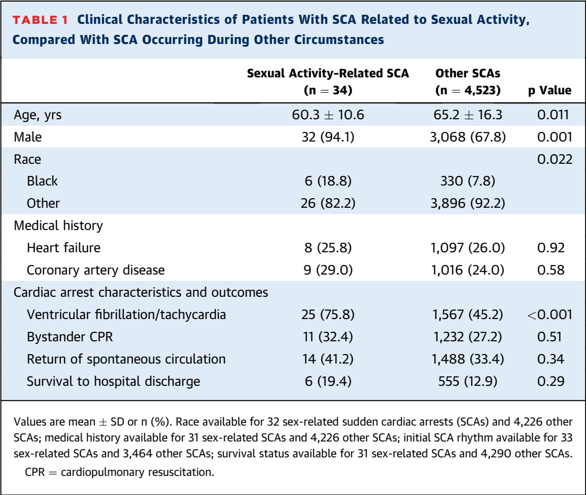

Myths|Facts #5
Sexual Activity
can trigger sudden cardiac arrest.
Ohhh...
Tell me more
Odds are... It Won't Kill You.
But when it is fatal, the victim is likely to be male.
Peggy Peck, MedPage Today
Sex may be more likely to trigger SCA “after a heavy meal, or alcohol use, or sex with a non-married partner. For men, this often is a mistress.”
Martha Gulati, editor-in-chief of the American College of Cardiology’s CardioSmart.org
Data from community-based Oregon SUDS
(Sudden Unexpected Death Study) study
from 2002-2015, catchment population 1mil

SEX-SCA JACC 2017
HeartRhythmBox
heartRhythmBox.com
1
2
3
4
5
6
7
 heartRhythmBox.com
heartRhythmBox.com